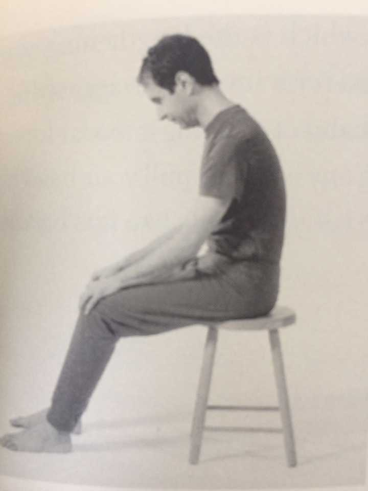
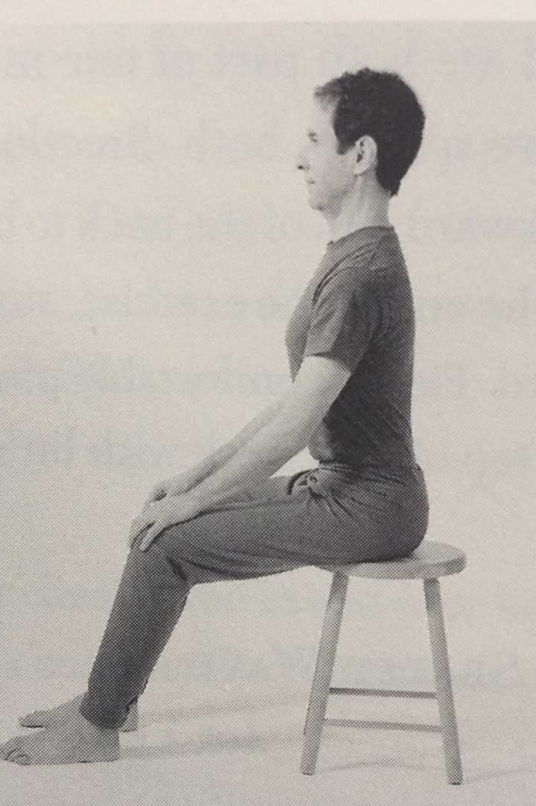
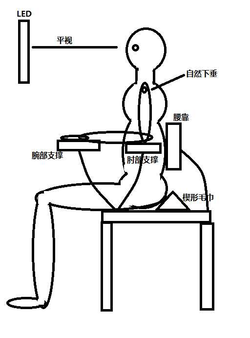

近期, 我亲身体会验证了一句话: 好的习惯并不能抵消坏习惯带来的影响. (坏习惯会摧毁你的好习惯的成果).甚至有一些损伤是不可逆的. 我虽一周健身三次. 可是久坐, 不良坐姿, 站姿带来的身体损伤是巨大的. 而且一天之中除了健身时候几乎全是坐着的, 这带来的影响太大了. (翻翻我的书中竟然有2015年买的程序员健康指南, 于是掏出来开始看了.) 这篇博客我认为可能是最有意义的博客之一. 博客内容出自知乎问题 如何保持正确的坐姿, 正确的站姿.
正确的坐姿
保持正确坐姿的重要性: 算算你一天之中坐着多长时间. 如果坐姿不良好, 带来的损伤我们可以估测一下. (注意, 有些损伤甚至不可逆.) 颈椎病, 手腕疼, 肩膀疼, 软组织增生, 肌肉劳损, 驼背, 骨刺, 骨头错位, 走路畸形…. 进而带来的影响, 专注力下降, 智商下降, 生活质量下降, 情感下降….. 我们都知道身体健康的重要性. 只是没有提醒就不太注意最基本的东西.
对于我们坐在电脑前每日10小时的人, 常见的姿势, 头部前倾, 肩胛骨前移, 这种弯腰驼背的姿势带来的问题就是斜方肌上侧, 胸小肌变短, 紧张; 斜方肌下侧, 中侧, 菱形肌被拉伸边长. 长时间就是驼背圆肩.
还有葛优躺, 由于重力, 长时间会导致脊柱由直变弯. 哪里受力弯哪里.
所以, 就必须保持正确的坐姿.
首先先明确一些, 坐姿并不是一个姿势, 静止不动的, 而是动态调整的, 也没有一个统一标准, 每个人要寻求自己的结果. 此处给出的只是找到自己的坐姿的方法.
准备好椅子
并不是让你去买一个人体工学椅子, 相对于挑一个好椅子, 学会使用自己的身体要重要得多. 要求高度合适, 在你坐在上面时，脚面能到踩在地上，不能悬空，坐在上面时大腿与地面基本平行.
找到属于自己的盆骨-脊柱-头 的上下联动.
什么意思呢, 你想想你的盆骨, 当你的盆骨后倾时候, 脊柱后弯, 头就低下来了. 如果盆骨前滚, 脊柱又向前弯了. 所以, 要有一个合适的位置才好.


调整你的重心和呼吸
一旦你专注起来, 慢慢的就很容易塌下去, 只有在呼吸顺畅的时候才能长期保持. 如果采用腹式呼吸很放松就行了, 否则就有点前倾或后倾. (我才发现我过前倾了)
肩膀的调整
这里可以去参考一些治疗圆肩的资料. 就知道正确的姿势了.
接下来更多的东西大家可以在网上, 知乎, 谷歌, YouTube之类的, 找到很好的参考资料. 所以, 也并不是所有的椅子都会让你更好, 学会自己判别.
腰背力量是很重要的, 不仅仅是健身, 平时保持住健康的姿态, 带来的效果是巨大的.
程序员的正确姿势之一:

正确的站姿
常见的错误姿势都会导致疼痛, 损伤, 甚至是内脏问题, 心理问题. 很多东西不要等到失去了才珍惜.
希望看到这篇博客的人可以去知乎一下相关问题, 都有很棒的答案. 比如:
保持健康
我是准备从现在起, 开始纠正的.
早意识到, 早解脱. 希望程序员长寿.
你要知道, 你并不需要多努力健身才能健康, 健康, 只要做一点点小事情. 就能健康.